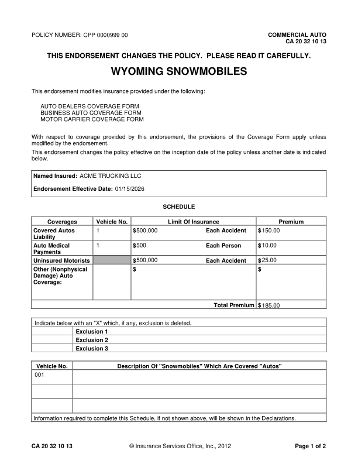
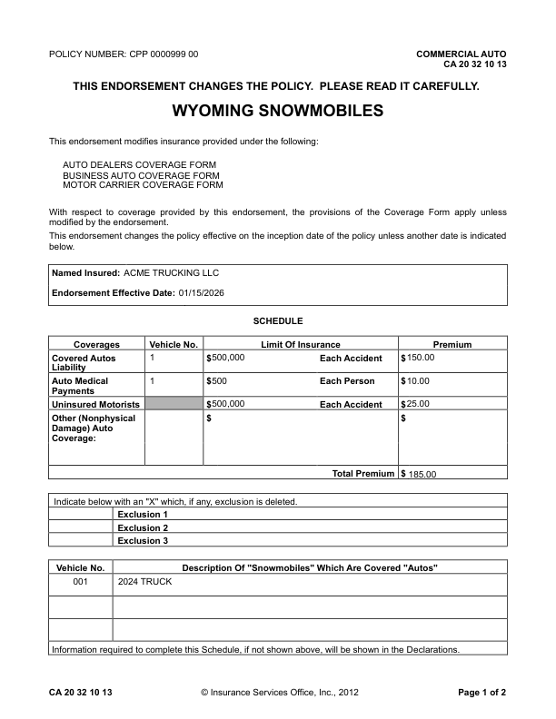
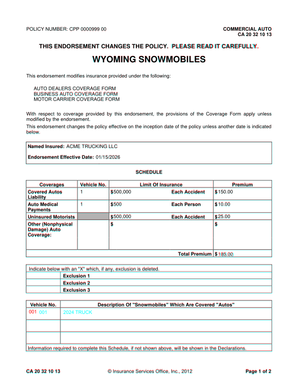
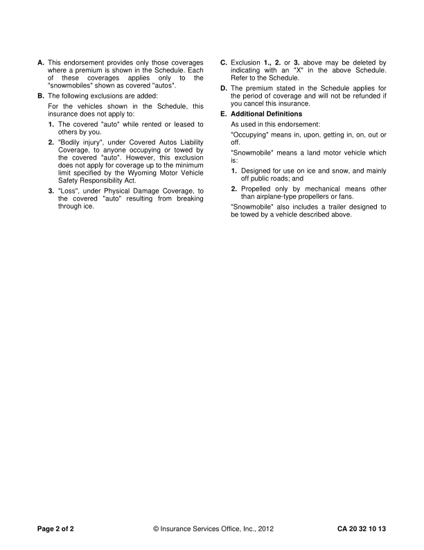
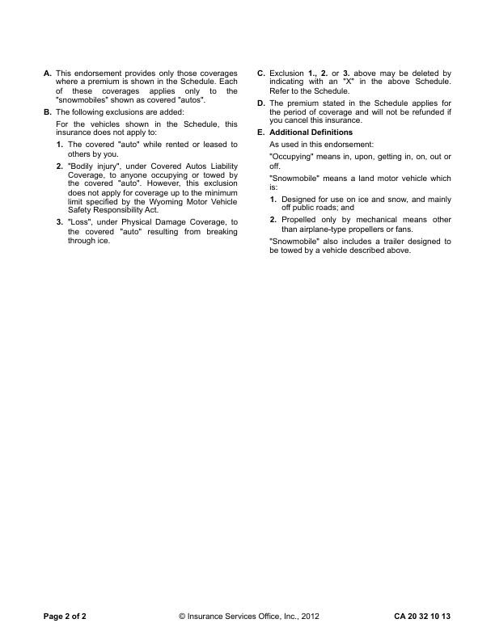
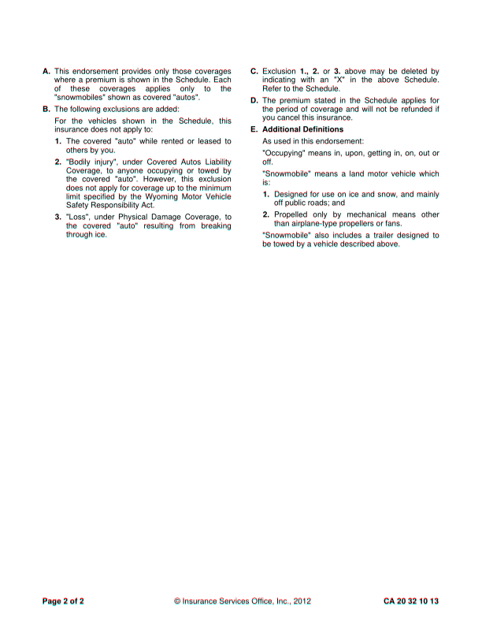

CA2032_1013: DIFFERENT score 99.4% pages golden 2 html 2 (pages with text) words golden 435 html 436 missing 2 extra 3 MISSING (in the GhostDraft golden, not in the HTML render) [PPAGE AGE] <= CA 20 32 10 13CA 20 32 10 13 ©© Insurance Services Office, Inc., 2012Insurance Services Office, Inc., 2012 PPage age 1 of of 2 EXTRA (in the HTML render, not in the GhostDraft golden) [2024 TRUCK] <= 001 2024 TRUCK [PAGE] <= CA 20 32 10 13 © Insurance Services Office, Inc., 2012 Page 1 of 2 CA 20 32 10 13 © Insurance Services Office, Inc., 2012 Page 1 of 2 golden C:\src\fact-docgen\src\Moe.Commercial.Documents.Generation.Integration.Tests\TestData\Snapshots\CA2032_1013\GoldenSnapshot.txt template C:\src\fact-poc\output\ghostdraft\batch\CA-20-32-10-13-Wyoming-Snowmobiles.json serverxml C:\src\fact-poc\output\ghostdraft\serverxml\CA2032_1013\ServerXml.xml



moved 001 (+21.2, -0.3)pt extra h rule at 291.4 (54.0-558.0) extra h rule at 370.1 (54.0-558.0) extra h rule at 385.1 (54.0-558.0) extra h rule at 410.6 (54.0-558.0) extra h rule at 436.9 (54.0-558.0) extra h rule at 451.1 (54.0-558.0) extra h rule at 512.6 (54.0-558.0) extra h rule at 572.6 (54.0-558.0) extra h rule at 586.9 (54.0-558.0) extra h rule at 601.9 (53.2-558.0) extra h rule at 681.4 (54.0-558.0)


